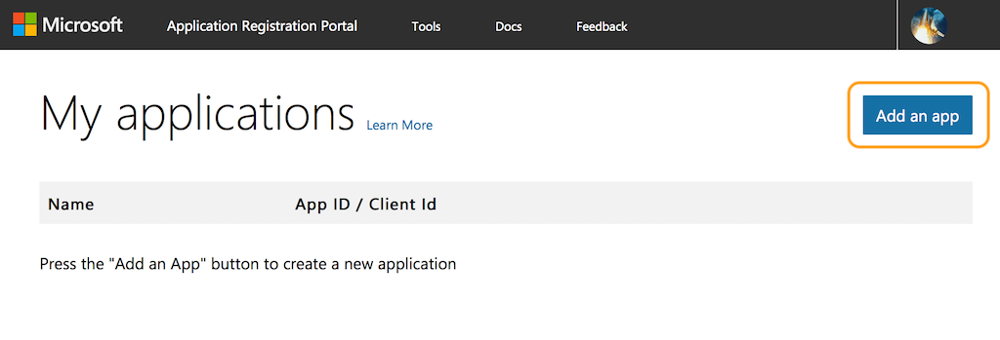
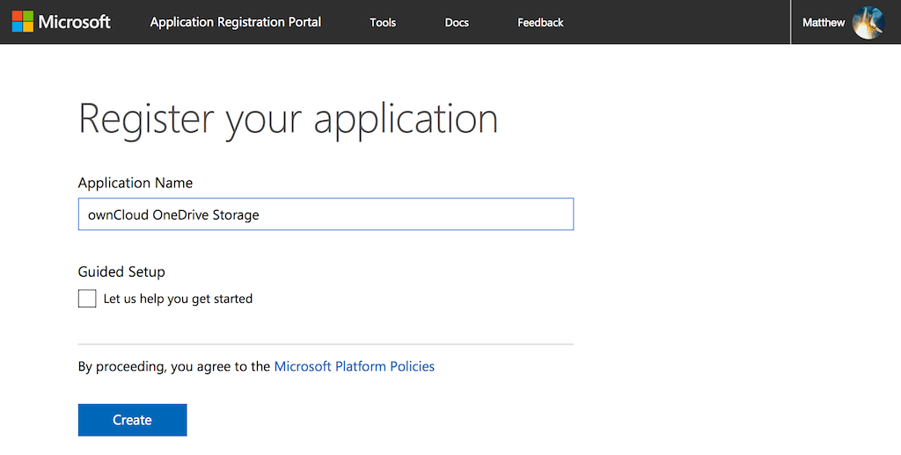
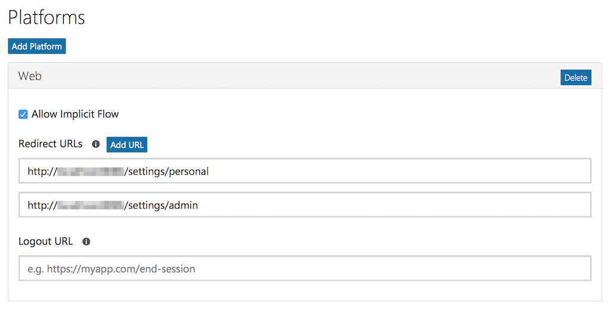
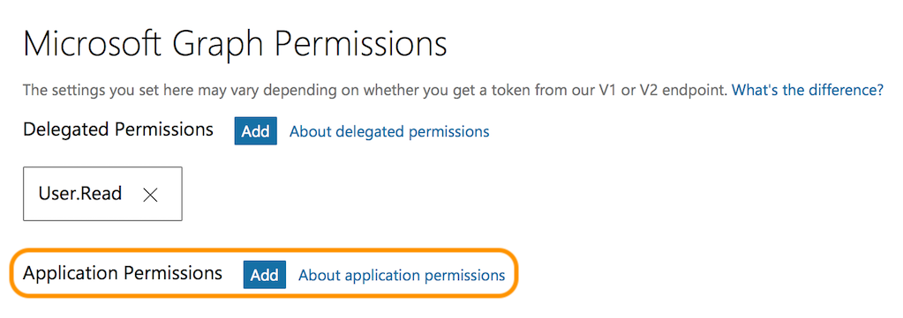
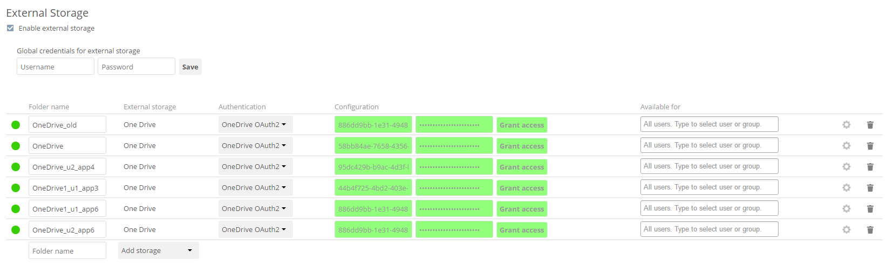

How to Create and Configure Microsoft OneDrive¶
To use Microsoft OneDrive as an external storage option in ownCloud, you need to do two things:
Create an Application Configuration¶

To create a new application:
- Open https://apps.dev.microsoft.com/ in your browser of choice and click “Create App”.
- Under “Properties”, set the application’s name.
- Click “Create”.
With the application created, you can then add a range of further settings. However, only a few of them are required for use with ownCloud.
Application Password¶

Under “Application Secrets”, click “Generate New Password”, which generates a password and displays it in a popup window. It is required later during when configuring a mount point.
Note
Copy the password to your preferred password manager, as it is only displayed once.
Redirect URLs¶
Under “Platforms”, click “Add Platform” and choose “Web” in the popup window which appears. Only one redirect URL field is visible at first, so click “Add URL” to add another one.
With two fields available, add two redirect URLs; one for settings/admin and one for settings/personal, as you can see in the image below.

Application Permissions¶

Under “Microsoft Graph Permissions”, click “Add” next to “Application Permissions”. This opens a popup window where you can choose the required permissions. Add a least the following four:
Files.Read.AllFiles.ReadWrite.AllIdentityRiskEvent.Read.AllUser.Read.All
With those settings added, click “Save”, located right at the bottom of the page.
Configure a Mount Point in ownCloud¶
You can add as many OneDrive mount points as you want. To do so:
- Add a new storage, selecting “One Drive” for external storage.
- Set the credentials of your OneDrive application, and then accept the permissions.
- If everything is accepted, the mount points should appear, with a green status icon on the far left-hand side.

To be able to use the occ command files_onedrive:subscribe, you need to have the variable overwrite.cli.url set in config/config.php, as in this example:
'overwrite.cli.url' => 'https://example.org:63984/index.php',
Note
The HTTPS prefix, port, and /index.php suffix are mandatory.